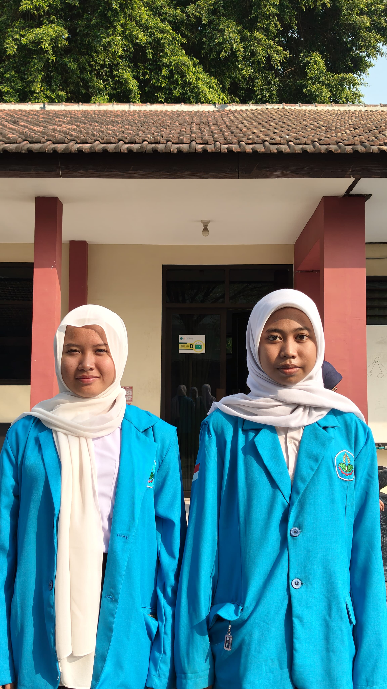

Datasync UMKM
Projec perlombaan KMIPN VIII di Politeknik Negeri Ujung Pandang Makasar.


Anggota Tim

- Cintya Azwa Sfrina R.H Saya
- Anita Rahma Wdyaningrum
Peran Saya
di projec kali ini saya bertanggung jawab atas pengerjaan .
- Tanggung jawab mengerjakan Desain UI/UX aplikasi.
- Tanggung jawab mengerjakan Desain case IOT.
- Tanggung jawab mengerjakan Intregasi Server.
- Tanggung jawab mengerjakan Hadwhere IOT.
- Tanggung jawab mengerjakan Backend singkronisasi.
- Tanggung jawab mengerjakan coding aplikasi.
Poster
Poster DataSync UMKM
Poster ini saya yang membuatnya sebagai salah satu dari aspek penilaian di KMIPN untuk Kontingen dari Politeknik Negeri Jember. Isinya merangkum masalah UMKM, solusi sistem replikasi database hibrida berbasis edge-computing, nilai utama, target pasar, cara kerja DataSync Kit Box, dan fakta menarik.

Tentang Project
DataSync UMKM adalah sistem kasir digital (Point of Sale) dan manajemen inventaris berbasis edge-computing buatan Tim UpNova dari Politeknik Negeri Jember yang dirancang khusus untuk mengatasi masalah koneksi internet tidak stabil di wilayah perdesaan atau area minim sinyal. Sistem hibrida ini mengintegrasikan aplikasi kasir lokal (DataSync POS) yang beroperasi dengan prinsip offline-first berlatensi 0 milidetik untuk memastikan kelancaran transaksi,
perangkat keras lokal (DataSync Edge Box) berdaya rendah ( kurang dari 15 Watt) yang memancarkan Wi-Fi lokal serta dilengkapi database SQLite berstandar ACID Compliant, serta server awan (Cloud VPS Dashboard) yang terhubung secara otomatis melalui algoritma Background Delta-Synchronization untuk memfasilitasi pemantauan omzet dan laporan keuangan jarak jauh begitu sinyal internet kembali pulih
Fitur Utama
Sinkronisasi Mandiri
Data transaksi tersinkron otomatis dengan mode sync yang fleksibel.
Dashboard Keuangan
Saldo kas, pemasukan, pengeluaran, laba bersih, dan grafik arus kas 7 hari.
Kasir (POS)
Akses cepat ke kasir, produk, pembukuan, dan laporan.
Aman & Terpercaya
Data tetap dalam kendali pengguna dengan integrasi melalui API.